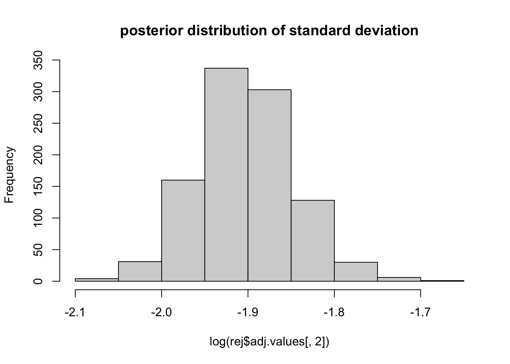

Week 13, Lecture 5.3 Exercise
Jelena H. Pantel
2023-02-02 15:51:37
Exercise 1. Our First ABC - estimating parameters of Gaussian distribution given observed data
A. Normal distribution
You took some introductory statistics, so I hope you are familiar with a Gaussian distribution (also referred to as a normal distribution). It’s useful to try and attribute data to an underlying probability distribution, so we can understand and make inference about that data. For example, many traits that have a genetic basis follow a normal distribution. Body length in animals is a good example of this. Researchers in the early 1900s were quite interested in better understanding genetic inheritance of traits of interest for animal breeding, which is a key reason why population geneticists (RA Fisher) were the ones who developed classical statistical tests such as Analysis of Variance - the goal was to understand how evolution led to shifts in normally distributed traits. The normal distribution itself was discovered by Carl Friedrich Gauss (a German mathematician and physicist!!) in 1809.

Human height. (a) Height distribution (inches) for 175 students in 1914 attending the Connecticut Agricultural College. (b) Graphical presentation of these student heights showing their close fit to a normal distribution. (a: Reprinted with permission from Albert and Blakeslee: Corn and Man. Journal of Heredity. 1914;5:51. Oxford University Press. b: Reprinted with permission from Brooker RJ: Genetics: Analysis & Principles, 3rd ed. New York: McGrawHill, 2008.)
We can plot data and use our own eyes to consider whether it follows a normal distribution. But I would like you to have an awareness that even claiming / stating “The data \(x\) follows a normal distribution” is - you guessed it - formulating a model! So then, given a set of data, we can propose a model, and estimate the paramater values when fitting that data to the model. We will do this with a normal distribution today.
B. The easiest / typical way to estimate parameters of a normal model when fit to observed data
The focus of today’s exercise will be to use Approximate Bayesian Computation (ABC) for fitting data to models. ABC is most needed with very complicated models where the underlying parameters are often unkown and difficult to estimate. However, its best to show you how ABC works by applying it to a simpler model. So we will learn to estimate the parameters in a normal distribution given a set of data.
The dataset of interest is body weight of a common household insect. Please run the following command to generate the dataset:
set.seed(42)
dat <- rnorm(1000, 3.428, exp(-1.940098)) # Dataset with measurements of 1000 household insects body mass (g) (yes I don't have real data, so this is simulated - pretend its real data!)You can visualize and summarize the data - what is the mean
(mean) and standard deviation (sd) of the
dataset? What is the natural logarithm of the standard
deviation of the dataset (log(sd))?
A normal distribution has two parameters to describe its shape - mean (\(\mu\)) and standard deviation (\(\sigma\)). The formula to generate a normal curve is:
\[ p(x) = \frac{1}{\sigma \sqrt {2 \pi}} e^{-\frac{1}{2}(\frac{x - \mu}{\sigma})^2} \] Where p(x) is the probability of observing a value of \(x\) given the model. For example, if data is drawn from a normal distribution centered on a mean mean (\(\mu\)) = 50 and standard deviation (\(\sigma\)) = 1, the normal distribution looks like this:
hist(rnorm(10000, 50, 1))
And the probability of observing a value of 60 given this model and these parameters is quite low:
# This calculates p(60) using the formula given above
dnorm(60, 50, 1)## [1] 7.694599e-23Its of interest to ‘fit your data to a normal model’. We can do this
very quickly in R - we provide our data dat to a command
fitdist in the R library fitdistrplus - it
fits your observed data to a normal model and returns estimates of the
model parameters (\(\mu\) and \(\sigma\)):
fitdistrplus::fitdist(data = dat, distr = "norm")## Fitting of the distribution ' norm ' by maximum likelihood
## Parameters:
## estimate Std. Error
## mean 3.4242893 0.004553051
## sd 0.1439801 0.003218794How does the fitdist model estimates for mean (\(\mu\)) and standard deviation (\(\sigma\)) compare to the true values used
to produce the data? Quite well.
C. Estimating parameters of a normal model using ABC (useful when you have more complex models)
Let’s learn to use ABC (Approximate Bayesian Computation) to estimate the most likely values of the model parameters given the observe data. This is most useful when (1) you have a very complex model and (2) you don’t know the underlying values of the parameters that produced the observed data. ABC works differently:
data is simulated from an underlying model
summary statistics are calculated from each simulation
the values of these summary statistics are compared to observed values
a ‘rejection algorithm’ is implemented, where simulations with summary statistics that are very far from the observed values are discarded
the remaining accepted simulations are used to calculate a ‘posterior distribution’ for underlying model parameters
Let’s look at each step more closely:
Step 1. Data is simulated from an underlying model
We stated previously we believe our data is drawn from a normal
distribution. We simulate 10000 datasets from a normal model, and we
randomly choose parameter values for each simultion from the normal
model. We can simulate draws from a normal distribution using the
command rnorm
# Randomly draw 1000 values from a normal distribution with
# mean 50, standard deviation 1
a <- rnorm(1000, 50, 1)
hist(a)
We wish to repeat this process of simulating our insect data (1000 data points) 10,000 times. We do not know the underlying values of the model parameters (\(\mu\) and \(\sigma\)) that produced our data, so we run our simulations with randomly chosen values for these.
mu_rand <- runif(10000, -100, 100) # What is this command doing?
sd_rand <- runif(10000, 0, 20)Create a histogram (hist) for each of these - do they
look as you would expect?
Now for each set of parameters, we simulate data that’s meant to
mimic our observed insect data using a normal model. How can we do this?
Using the rnorm command - we simulate data under a random
normal model with parameters \(\mu\)
and \(\sigma\) from each of the 10,000
values we generated above. This works for a single parameter set like
this:
b <- rnorm(1000, mu_rand[1], sd_rand[1])
hist(b)
We can do this for all of the parameter sets this way:
sim <- array(NA, dim = c(10000, 1000))
for (i in 1:10000) {
sim[i, ] <- rnorm(1000, mu_rand[i], sd_rand[i])
}Every single dataset is different:
d <- sample.int(10000, 8)
par(mfrow = c(2, 4))
for (i in d) {
hist(sim[i, ])
}
Step 2. Summary statistics are calculated from each simulation
Our focal summary statistics are (1) the mean of the dataset and (2)
the logarithm of the standard deviation of the dataset. We save those to
a new variable called stat.obs:
stat.obs <- c(mean(dat), log(sd(dat)))Our simulated summary statistics can be obtained by calculating the mean and log(sd) for each of the 10000 simulations:
stat.sim <- array(NA, dim = c(10000, 2), dimnames = list(NULL,
c("mean", "log_sd")))
for (i in 1:10000) {
stat.sim[i, 1] <- mean(sim[i, ])
stat.sim[i, 2] <- log(sd(sim[i, ]))
}Step 3. The values of these summary statistics are compared to observed values (using either a rejection algorithm or a neural network - we use a neural network)
We do this step using the R package abc:
par.sim <- cbind(mu_rand, sd_rand)
rej <- abc::abc(target = stat.obs, param = par.sim, sumstat = stat.sim,
tol = 0.1, method = "neuralnet")## 12345678910
## 12345678910Step 4. The remaining accepted simulations are used to calculate a ‘posterior distribution’ for underlying model parameters
We can visualize this by plotting the values of the accepted simulations (the ones that are closest to our observed summary statistics):
par(mfrow = c(1, 1))
hist(rej$adj.values[, 1], main = "posterior distribution of mean")hist(log(rej$adj.values[, 2]), main = "posterior distribution of standard deviation")
How well do these compare to the observed values in the original data
(obs.stat)?